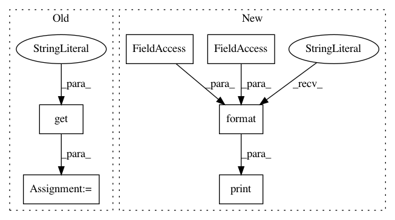

e34343896cf822e2fb6208b85399b1e33cfe9254,src/role/main.py,,manager,#Any#Any#,18
Before Change
args.bb_top)
try:
print("Manger has started...")
word = config.get(section="DETECTION", option="word", fallback="crosswalk")
key = config.get(section="DETECTION", option="key", fallback="highway")
value = config.get(section="DETECTION", option="value", fallback="crosswalk")
zoom = config.getint(section="DETECTION", option="zoom", fallback=19)
compare = config.getboolean(section="DETECTION", option="compare", fallback=True)
orthofoto = config.get(section="DETECTION", option="orthofoto", fallback="other")
network = config.get(section="DETECTION", option="network")
search = Search(word=word, key=key, value=value, zoom_level=zoom, compare=compare, orthofoto=orthofoto,
network=network)
Manager.from_big_bbox(
big_bbox,
redis_args(config),
"jobs",
After Change
"jobs",
configuration)
except ConnectionError:
print(
"Failed to connect to redis instance [{ip}:{port}], is it running? Check connection arguments and retry.".format(
ip=configuration.server,
port=configuration.port))
finally:
print("Manager has finished!")
In pattern: SUPERPATTERN
Frequency: 3
Non-data size: 6
Instances
Project Name: geometalab/OSMDeepOD
Commit Name: e34343896cf822e2fb6208b85399b1e33cfe9254
Time: 2016-11-25
Author: samuel.kurath@gmail.com
File Name: src/role/main.py
Class Name:
Method Name: manager
Project Name: GoogleCloudPlatform/python-docs-samples
Commit Name: 14995eb1b0921a5afbfb094993aeb0485f3f4d55
Time: 2019-10-18
Author: gguuss@gmail.com
File Name: iot/api-client/manager/manager.py
Class Name:
Method Name: get_config_versions
Project Name: nutonomy/nuscenes-devkit
Commit Name: b2d15b5e9758af0b10aef06b5cd43eb1fa45c10a
Time: 2018-10-03
Author: oscar@nutonomy.com
File Name: python-sdk/examples/export_pointclouds_as_obj.py
Class Name:
Method Name: